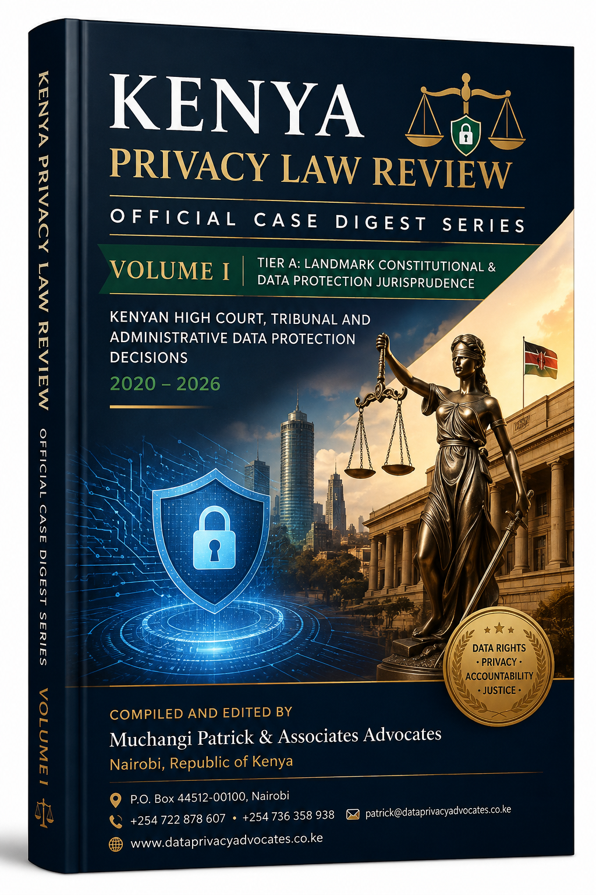
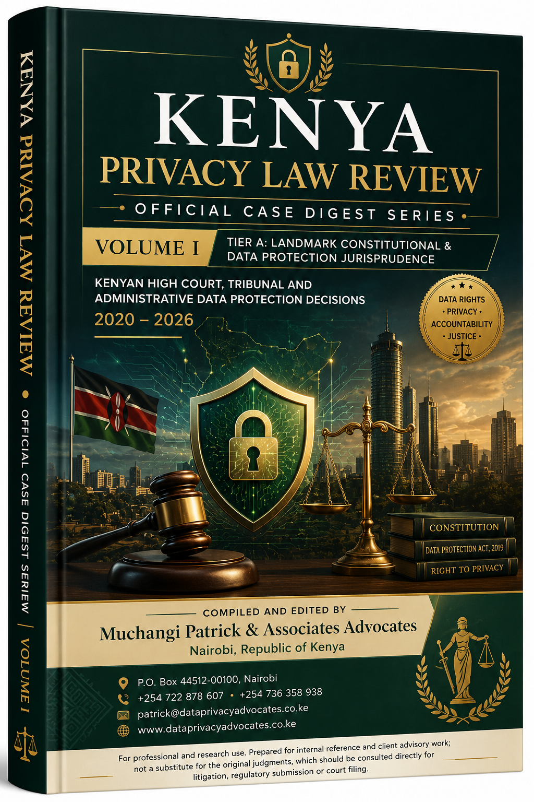
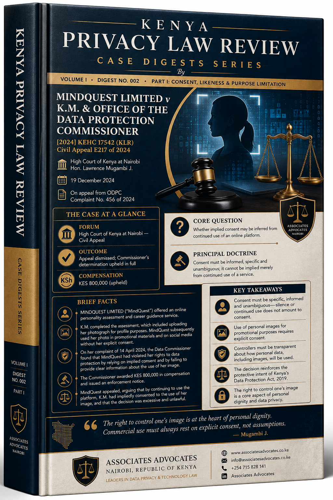

Kenya Privacy Law Review
Official Case Digest Series.
A practical reading room for Kenyan privacy and data protection jurisprudence. Select a volume or case below to download the PDF.

Volume I · 2026
Consent, Data Protection & Digital Rights
Forty case digests from the courts and tribunals of Kenya, with landmark decisions and practical legal analysis.

Digest No. 001
Grain Industries Limited v E.M. & ODPC
[2024] KEHC 14003 (KLR) · Civil Appeal E186 of 2024.

Digest No. 003
Mind Quest Limited v M. & 2 Others
High Court of Kenya · Civil Appeal · Case Digest No. 003.
For professional and research use. Prepared for internal reference and client advisory work; not a substitute for the original judgments, which should be consulted directly for litigation, regulatory submission or court filing.
Back to Muchangi Patrick & Associates